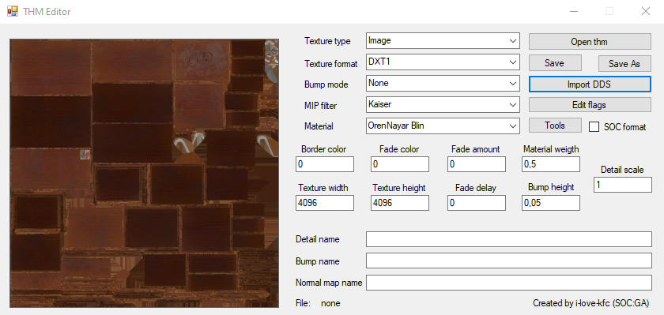

THM Editor
- Program Developer:
- i-love-kfc
- The version described in the article: 1.4
- Ap-pro forum topic
About
Utility for editing .thm files without the need to use the SDK

Features
- Changing any available information stored in a .thm file
- Ability to fix incorrectly displayed textures when transferring .thm files from CS/COP
- Ability to create a file from scratch (without loading another .thm file)
Functionality
Buttons
Open thm
Opens a .thm file
Save
Save file
Save As
Save as
Import DDS
Imports .dds texture
Edit flags
| Checkbox | Description |
|---|---|
| Generate Mip Maps | Enables MIP-map generation |
| Has Alpha | |
| Binary Alpha | |
| Alpha Border | |
| Color Border | |
| Fade To Color | |
| Fade To Alpha | |
| Dither Color | |
| Dither Each MIP Level | |
| Diffuse Detail | |
| Implicit Lighted | |
| Detail Bump | |
| Grey Scale (S.T.A.L.K.E.R. builds) |
Texture type
| Field | Description |
|---|---|
| Image | 2D texture |
| Cube Map | Is a method of environment mapping that uses the six faces of a cube as the map shape |
| Bump Map | Bump Map |
| Normal Map | Normal Map |
| Terrain | Terrain Map? |
Texture format
| Field | Description |
|---|---|
| DXT1 | Compression without alpha channel support |
| ADXT1 | Compression with alpha channel support |
| DXT5 | Compression with alpha channel support |
| 4444 | RGBA4444? |
| 1555 | RGBA1555? |
| 565 | Uncompressed RGB565 or RGB16? |
| RGB | Compression without alpha channel support |
| RGBA | Compression with alpha channel support |
| NVHS | NVidia Texture Format (GEForce 3) |
| NVHU | NVidia Texture Format? |
| A8 | 8-bit alpha only DirectX Format |
| L8 | 8-bit luminance only DirectX Format |
| A8L8 | 16-bit using 8 bits each for alpha and luminance DirectX Format |
Bump Mode
| Field | Description |
|---|---|
| Autogen (S.T.A.L.K.E.R. Builds) | |
| None | None |
| Use | Use Bump mapping method |
| Use Parallax | Use Parallax mapping method |
MIP Filter
Different algorithms of MIP-map generation
| Field | Description |
|---|---|
| Box | The simplest MIP-map generation algorithm. However, the box filter has a number of limitations that can be quite noticeable with certain textures. For example, if a texture contains very narrow features (e.g., lines), then aliasing artifacts may be very pronounced |
| Cubic | Generation with weighted sum of eight pixels. The advantage of the cubic filter over the box is that it can have negative side lobes (weights) which help maintain sharpness while reducing the image. This can help reduce some of the blurring effect of filtering with mipmaps |
| Point | |
| Triangle | |
| Quadratic | |
| Advanced | |
| Catrom | |
| Mitchell | |
| Gaussian | |
| Sinc | |
| Bessel | |
| Hanning | |
| Hamming | |
| Blackman | |
| Kaiser | Increase readability of textures by increasing sharpness and contrast |
Material
Different shading algorithms
| Field | Description |
|---|---|
| OrenNayar Blin | Oren-Nayar-Blinn shader is a variant of the Blinn shader. This shader is good for matte surfaces such as fabric, terra cotta, and so on |
| Blin Phong | |
| Phong Metal | |
| Metal OrenNayar |
Tools
| Button | Description |
|---|---|
| Generate thms by .dds | |
| Fix invalid chunks in thms | |
| Validate thms with dds | |
| Convert thms format (SOC/COP) |
Chechboxes
SOC format
SoC format of .thm
Border Color
?
Fade Color
?
Fade Amout
?
Material Weight
Shading model weight
| Values | 0 - OrenNayar - Blin 1 - Blin - Phong 2 - Phong - Metal 3 - Metal - OrenNayar |
Detail Scale
Detail Map Scale
Texture Width
Texture Width
Texture Height
Texture Height
Fade Delay
?
Bump Height
Bump Map Height
Detail name
Path to Detail Map
Bump name
Path to Bump Map
Normal Map name
Path to Normal Map